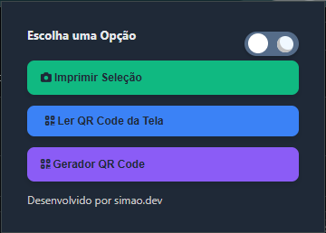
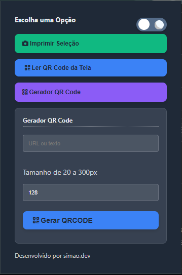
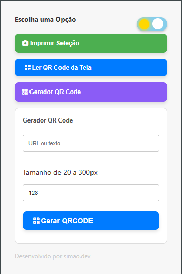
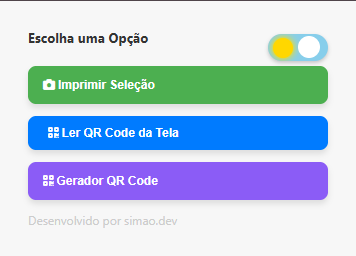
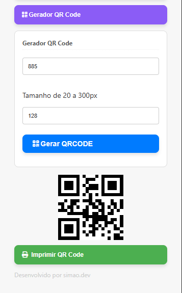

Concluído.
Captura de seleção
Extensão de Captura e geração de QR Code, Solução robusta construída sob a arquitetura moderna do Manifest V3, focada em produtividade e automação. O projeto resolve o desafio de processamento de imagem local integrado ao navegador, utilizando content scripts para manipulação dinâmica do DOM e service workers para o gerenciamento de eventos em segundo plano.





// 01 VISÃO GERAL
Impressão de Seleção Extensão multifuncional para navegadores desenvolvida em Manifest V3 que otimiza o fluxo de captura de dados e automação logística. A ferramenta permite que o usuário selecione áreas específicas da tela para realizar capturas de imagem e decodificar QR Codes em tempo real diretamente no navegador, sem a necessidade de downloads externos. Conta também com um módulo dinâmico para geração de etiquetas (EAN-8 e Code 128) e uma interface responsiva com suporte a Dark/Light mode baseada em armazenamento local. Tecnologias: JavaScript, HTML5, CSS3, Chrome Extensions API (Manifest V3), jsQR.
// 02 FUNCIONALIDADES
- Seleção de Área Personalizada
- Processamento Local de Imagem
- Visualização Prévia
- Leitura de QR Code via Tela
- Geração de Códigos de Barras
- Formatação de Labels
- Integração com Hardware Local
- Fluxo de Automação
- Menu Popup Intuitivo
- Alternância de Temas
- Persistência de Preferências
- Estrutura Manifest V3
- Service Workers
DETALHES
FUNÇÃO
Desenvolverdor full-stack
ANO
2025
STATUS
Concluído
TECNOLOGIAS
- JavaScript (Vanilla ES6+)
- HTML5
- CSS3
- Manifest V3
- Service Workers
- Content Scripts
- Message Passing API
- jsQR
- Canvas API
- Bibliotecas de Código de Barras
- Web Storage API